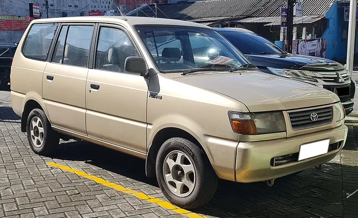
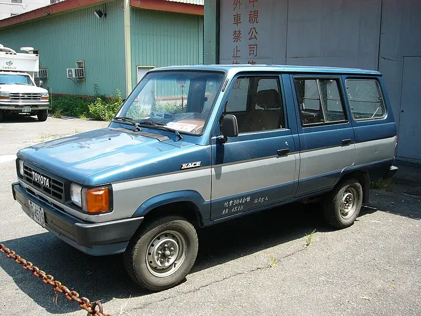
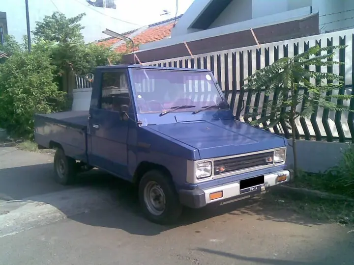
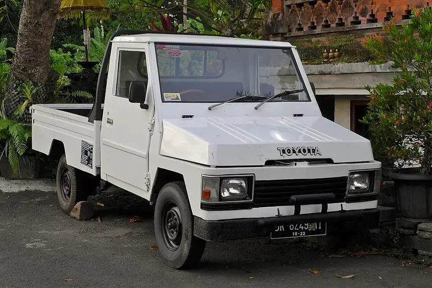

Toyota Kijang
Fourth generation (F60/F70/F80; 1997) · 1996–2007
Abstract
This generation of the Toyota Kijang is a compact station wagon, built December 1996 – June 2004 (wagon, Indonesia) in Indonesia: Sunter, North Jakarta; Karawang, West Java (Multi Astra/TAM/TMMIN), Malaysia: Shah Alam, Selangor (UMWT), Philippines: Santa Rosa, Laguna (TMP) and other plants. Body styles: 5-door wagon/van, 2-door pickup. Layout: Front-engine, rear-wheel-drive.

,_West_Surabaya.jpg){kind=link}
1Specifications
| Production | December 1996 – June 2004 (wagon, Indonesia)December 1996 – February 2005 (pickup, Indonesia)1998–2005 (Philippines)1998–2007 (Taiwan)2000–2005 (South Africa) |
|---|---|
| Assembly | Indonesia: Sunter, North Jakarta; Karawang, West Java (Multi Astra/TAM/TMMIN)Malaysia: Shah Alam, Selangor (UMWT)Philippines: Santa Rosa, Laguna (TMP)South Africa: Prospecton (TSAM)Taiwan: Guanyin (Kuozui Motors)Vietnam: Hanoi (TMV) |
| Class | Compact station wagonCompact pickup truck |
| Body style | 5-door wagon/van2-door pickup |
| Layout | Front-engine, rear-wheel-driveFront-engine, full-time four-wheel-drive |
| Engine | Petrol:1.8 L 7K I41.8 L 7K-E I41.8 L 2Y I42.0 L 1RZ-E I42.4 L 2RZ-E I4 (Condor/Zace Surf)Diesel:2.4 L 2L-II I43.0 L 5L I4 (Condor) |
| Transmission | 4-speed manual5-speed manual4-speed automatic |
| Wheelbase | 2400 mm (SWB)2650 mm (LWB, pickup) |
| Length | 4155–4270 mm (SWB)4405–4535 mm (LWB)4455–4685 mm (pickup) |
| Width | 1670–1720 mm |
| Height | 1740–1820 mm |
| Weight | 1100–1685 kg |
| Also called | Toyota Tamaraw FX Revo (Philippines)Toyota Unser (Malaysia)Toyota Zace (Vietnam)Toyota Zace Surf (Taiwan)Toyota Condor (African markets)Toyota Stallion (South Africa) |
| Related | Toyota Hilux (N140/N150/N160/N170) |
2Versions
- Unser (F80/F82 - Malaysia)
- Revo (F80/F81/F82 - Philippines)
- Condor/Stallion (F60/F80/F81/F85 - African Markets)
- Zace/Zace Surf (F60/F80)
3Previous generations



.jpg){kind=link}

,_Denpasar,_2018_(01).jpg){kind=link}
4Generation by generation
Length +2% from the first to the last
F10 19764,070 mm
F20 19814,100 mm
F40 19863,960 mm
F60 19964,155 mm
Weight +17% from the first to the last
F10 1976940 kg
F40 19861,035 kg
F60 19961,100 kg